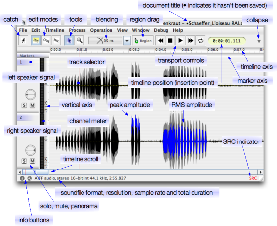

The document frame represents an opened audio file (or a compound of multiple mono files). Here you do the main editing and navigation, here you find the transport controls to play back the sound. The document frame is shown below. You can use the mouse to move over the text labels and press the button to go to specific help files.
